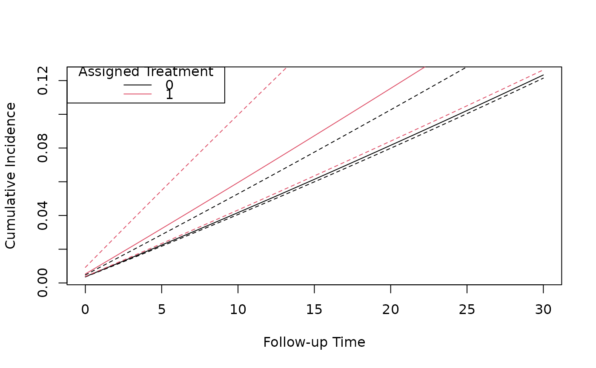

R/predict.R
predict.TE_msm.RdThis function predicts the marginal cumulative incidences when a target trial population receives either the
treatment or non-treatment at baseline (for an intention-to-treat analysis) or either sustained treatment or
sustained non-treatment (for a per-protocol analysis). The difference between these cumulative incidences is the
estimated causal effect of treatment. Currently, the predict function only provides marginal intention-to-treat and
per-protocol effects, therefore it is only valid when estimand_type = "ITT" or estimand_type = "PP".
Object from trial_msm() or initiators().
Baseline trial data that characterise the target trial population that marginal cumulative incidences
or survival probabilities are predicted for. newdata must have the same columns and formats of variables as in
the fitted marginal structural model specified in trial_msm() or initiators(). If newdata contains rows with
followup_time > 0 these will be removed.
Specify the follow-up visits/times where the marginal cumulative incidences or survival probabilities are predicted.
Construct the point-wise 95-percent confidence intervals of cumulative incidences for the target trial population under treatment and non-treatment and their differences by simulating the parameters in the marginal structural model from a multivariate normal distribution with the mean equal to the marginal structural model parameter estimates and the variance equal to the estimated robust covariance matrix.
Number of samples used to construct the simulation-based confidence intervals.
Specify cumulative incidences or survival probabilities to be predicted. Either cumulative incidence
("cum_inc") or survival probability ("survival").
Further arguments passed to or from other methods.
A list of three data frames containing the cumulative incidences for each of the assigned treatment options (treatment and non-treatment) and the difference between them.
# If necessary set the number of `data.table` threads
data.table::setDTthreads(2)
data("te_model_ex")
predicted_ci <- predict(te_model_ex, predict_times = 0:30, samples = 10)
# Plot the cumulative incidence curves under treatment and non-treatment
plot(predicted_ci[[1]]$followup_time, predicted_ci[[1]]$cum_inc,
type = "l",
xlab = "Follow-up Time", ylab = "Cumulative Incidence",
ylim = c(0, 0.7)
)
lines(predicted_ci[[1]]$followup_time, predicted_ci[[1]]$`2.5%`, lty = 2)
lines(predicted_ci[[1]]$followup_time, predicted_ci[[1]]$`97.5%`, lty = 2)
lines(predicted_ci[[2]]$followup_time, predicted_ci[[2]]$cum_inc, type = "l", col = 2)
lines(predicted_ci[[2]]$followup_time, predicted_ci[[2]]$`2.5%`, lty = 2, col = 2)
lines(predicted_ci[[2]]$followup_time, predicted_ci[[2]]$`97.5%`, lty = 2, col = 2)
legend("topleft", title = "Assigned Treatment", legend = c("0", "1"), col = 1:2, lty = 1)

# Plot the difference in cumulative incidence over follow up
plot(predicted_ci[[3]]$followup_time, predicted_ci[[3]]$cum_inc_diff,
type = "l",
xlab = "Follow-up Time", ylab = "Difference in Cumulative Incidence",
ylim = c(0.0, 0.5)
)
lines(predicted_ci[[3]]$followup_time, predicted_ci[[3]]$`2.5%`, lty = 2)
lines(predicted_ci[[3]]$followup_time, predicted_ci[[3]]$`97.5%`, lty = 2)